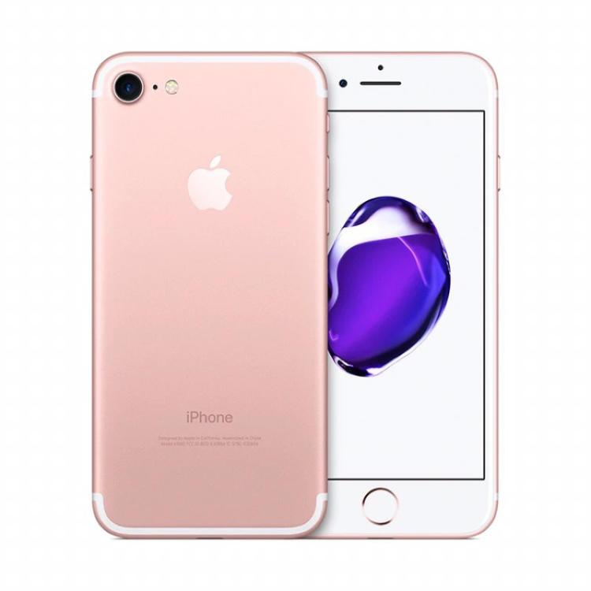
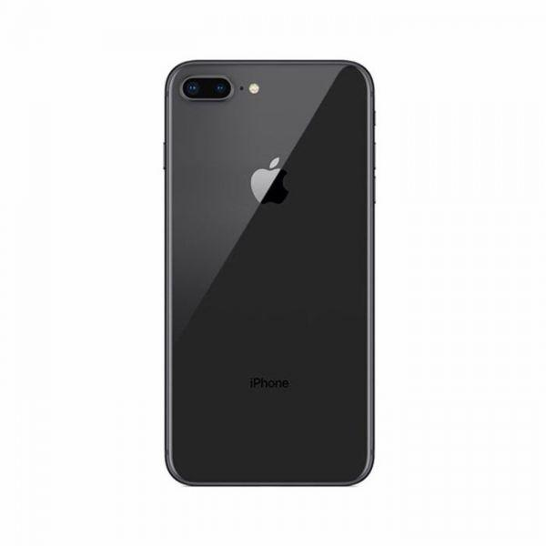

On September 13, 2017, Apple released the iPhone 8 at the new product launch in the fall of 2017, which supports wireless charging. It is divided into two versions, 64GB and 256gb, and the price is 5888 yuan and 7188 yuan respectively. On April 9, 2018, Apple announced the launch of the red special edition iPhone 8, offering 64GB and 256gb storage capacity models, starting at RMB 5888 and RMB 7188. It will accept online ordering from April 10, and will be officially launched in China on Friday, April 13. 
IPhone 8 plus is a mobile phone released by apple in 2017. It was released at the apple new product launch at the Steve Jobs theater of the new headquarters of Apple Park in the early morning of September 13, 2017 Beijing time. The iPhone 8 plus has a glass top design and supports wireless charging. It has Apple's a11 processor, 64GB and 256gb storage space, and IOS operating system. The price of the Chinese mainland is 6688 yuan. 